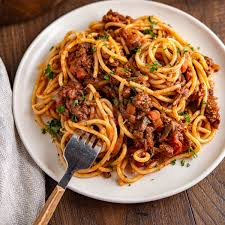

Spaghetti

Spaghetti is probably the most kid-friendly pasta recipe to ever exist! Serve this Easy
Spaghetti Recipe with a side of Breadsticks and a fresh Salad – your whole family will be thanking you!
It’s simple, easy to make, always tastes delicious, and everyone likes it.
And honestly, leftovers taste exactly the same heated up as if it was just made (my kind of leftover)!!
Ingredients
- 1 pound ground beef
- 2 cubes beef bouillion
- 1 (8-ounce) can tomato sauce
- 1 (6-ounce) can tomato paste
- black pepper to taste
- 2 cups hot water
- 2 teaspoons sugar white or brown
- ½ teaspoon dried basil
- ½ teaspoon dried oregano
- dash of garlic
- 16 ounces spaghetti noodles
Instructions
- Brown the ground beef in a large skillet. (drain excess fat)
- Once cooked, throw in salt,
pepper, tomato sauce and paste, water (with the bouillon cubes in it), sugar, basil, oregano, and garlic. Simmer on low for an hour.
- A few minutes before the hour is done, cook box of spaghetti noodles as directed on package.
- Once the noodles are cooked, drain and add to spaghetti sauce. ENJOY!
Back to Main page